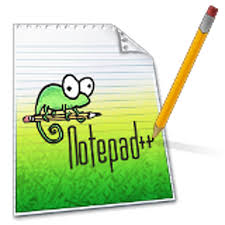

P.W.IProgramação para Web 1(1° ano)

Existem diversas áreas no mundo da informatica, dentre elas temos a programação voltada para a Web(para Internet), muito importante em um mundo tão dependente da Internet como o nosso, e percebendo isso, prolongamos essa matéria para os três anos(sendo essa descrição a do 1° ano). Essa matéria de nosso curso ir trata de varios pontos do mundo virtual, introduzindo com a historia da origem e ascensão da internet, e contará o surgimento da linguagem de marcação HTML e de seu aliado o CSS, com os quais nossos alunos aprendem a desenvolver seus proprios sites.
A frente de nossos estudantes temos a professora Edna(Turma A) e Jeferson(Turma B), que vem os guiando passo à passo em cada progresso, utilizando a acessível ferramenta virtual Notepad++ para a criação de seus projetos para a Web nesta matéria, mas que tambem pode ser bem util em seus prorprios projetos dentro das demais matérias. Dentro dessa ferramenta são passadas aos alunos tecnicas eficiêntes e reconhecidas em HTML5 e CSS3.
Nossos alunos são atendidos com exelentes recursos para o desenvolvimento de suas habilidades, tendo acesso à 2 laboratorios(nos quais realizam todas as aulas), equipados com computadores de ultima geração, que estâo preparados para atender todas as necessidades dos alunos, e para o melhor aprendizado de cada individuo, os alunos são divididos em dois laboratorios com capacidade para 20 em cada, dessa maneira todos terão um aproveitamento muito superior.